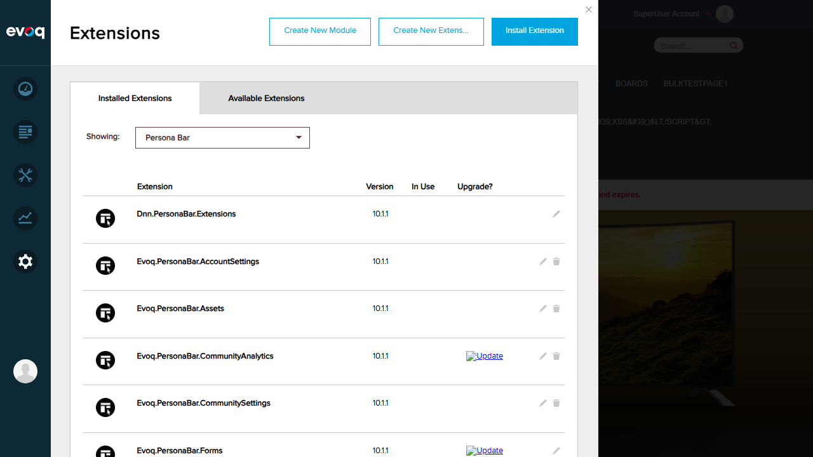

Test 1: Verify Assistant Feature Loads and is Accessible
FAIL
Objective: Verify that the Evoq Assistant feature loads and is accessible in the PersonaBar.
Steps Taken:
Logged in as SuperUser (host/Pass123456)
Examined the PersonaBar for an Assistant icon/menu item
Opened Settings > Extensions to check for Evoq.Assistant module
Filtered extensions by "Persona Bar" type
Searched for "Evoq.Assistant" or "Evoq.PersonaBar.Assistant" in the extensions list
Issue Found: The Evoq.Assistant module is NOT installed on this environment.
The PersonaBar extensions list shows various Evoq modules (AccountSettings, Assets, CommunityAnalytics, etc.)
but no Assistant-related module. Without this module installed, the feature cannot be accessed.
Step 1: Login verified - PersonaBar visible on left side (no Assistant icon visible)

Step 5: PersonaBar extensions list - Evoq.Assistant module NOT present
Test 2: Verify Assistant Chat Initialization
FAIL
Objective: Verify that the assistant chat initializes properly when clicked.
Steps Taken:
Attempted to locate Assistant icon in PersonaBar
Could not find any Assistant-related UI element to click
Issue Found: Cannot test chat initialization because the Evoq.Assistant module is not installed.
No Assistant icon or menu item exists in the PersonaBar to trigger the chat feature.
Settings menu - No Assistant option available
Test 3: Verify Assistant UI Integration
FAIL
Objective: Verify that the assistant UI is properly integrated within the PersonaBar interface.
Steps Taken:
Examined all PersonaBar icons and menus
Checked Settings submenu for Assistant configuration
Verified Extensions list for installed Persona Bar modules
Issue Found: The Assistant UI integration cannot be verified because the Evoq.Assistant module
is not present in the system. The code in EvoqPersonaBarContainer.cs references
"Evoq.Assistant" as a root item, but this requires the actual module to be installed.
Extensions list showing installed Modules - No Assistant module found
Observations
Code suggests feature exists, but no UI element found to test it.
The source code in EvoqPersonaBarContainer.cs (lines 45, 140-145)
clearly shows that "Evoq.Assistant" is registered as a root item in PersonaBar, and the system
would load the AssistantChat module from Evoq.Assistant/Scripts/AssistantChat
if the module is installed and the user has VIEW permission.
Module dependency not met: The Evoq.Assistant module is a separate extension that
must be installed for this feature to function. This module is NOT installed on the current test environment.
License requirement: According to the code, the Assistant feature also requires
LicenseHelper.HasLicense() to return true. The trial license on this
environment (20 days remaining) should satisfy this requirement, but the missing module prevents testing.
Navigation icon exists in code: The file
nav_assistant.svg exists in the codebase, suggesting the icon would
appear in PersonaBar if the module were installed.
Recommendation: To test this feature, the Evoq.Assistant module package needs to be
installed via Settings > Extensions > Install Extension.
Conclusion
All tests for the "Evoq Assistant Integration" feature have FAILED because the required
Evoq.Assistant module is not installed on the test environment. The feature's
code integration points exist in Evoq.PersonaBar.UI, but the actual Assistant
functionality requires the separate Evoq.Assistant extension package to be installed.
This is not a bug in the PersonaBar.UI code - it is an environment configuration issue where the dependent
module is missing.